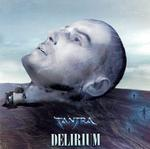

| Artist: | Tantra |
| Title: | Delirium |
| Label: | self produced |
| Length(s): | 49 minutes |
| Year(s) of release: | 2005 |
| Month of review: | [11/2005] |
| 1) | Sea Maiden - The Vision | 4.59 |
| 2) | Nostalgia - Memories, The Search, Nostalgia | 5.10 |
| 3) | Cantata (Of Love And Death) | 6.23 |
| 4) | Commitment To Love | 1.22 |
| 5) | Toccami | 2.59 |
| 6) | The Pain | 4.16 |
| 7) | Heaven | 7.42 |
| 8) | Commitment To Love II | 0.53 |
| 9) | Lord Of Doom | 3.06 |
| 10) | Delirium | 6.21 |
| 11) | Salutation | 5.48 |
Nostalgia is a song in three parts, even though it is not very long. It opens with bubbly keys and a slightly jazzy guitar sound. The organ brims warmly then as we are submerged into a bit of old school prog. The second part is also very warm, and very electronic too.
Cantata is yet another tense instrumental piece with more an eye for atmospherics than for song writing. It all stays a bit vague and jazzy. Only at the end does the pace set in. Commitment To Love is quite different with its Spanish guitar playing and keyboards underneath. Toccami seems to have a bit more bite, certainly the guitar takes the fore a bit more. The voicing of guitar is somewhat ethereal and high pitched. The vocals are very rough and rowdy. I cannot makes heads or tails of them. The link to heavy seventies Italian prog is quite pronounced. On the other hand, the guitar solo that follows is jazzrockish, but with a hint of Steve Rothery.
The Pain features the vocals of Lu. First we get some tension building using the electronics department. After half a minute or so we arrive in more catchy, even groovy territory. The guitar lines are rather Hackettish, and like the opener this is an extremely varied tune. I have to admit that the mix on this album is not always a very lucky one, which enhances the restlessness that immediately pervades the music when the band goes for something more complex. Still, the song has its moments of greatness for instance the highly symphonic guitar parts in the second half.
Heaven opens filmically. Some of these parts can be quite Vangelis like, very orchestral, very melodic and melodramatic (in a good way). The spoken words I hear seem to be French. The second half has whispered male vocals. They sound very far away, in a whispered fashion in fact. Is this a pop pistache?
Commitment To Love II is not acoustic guitar, but piano. It is relatively short and gives way to Lord Of Doom. It opens with a bizarre story of somebody who died 23 times clinically, self induced that is. It is not a serious story. For the rest, this is mainly an up-beat instrumental, symphonic track, quite nice in fact.
The up-beatness continues in Delirium, which has a very open guitar sound and plenty of repetitive keyboards. There is a certain catchiness to the music here. The guitar sound has elements of Twelfth Night (as does the melody in fact), ethereal yet accessible. The best track thus far, I think. Salutation opens with some orchestral keyboards, going back to parts earlier on this album.